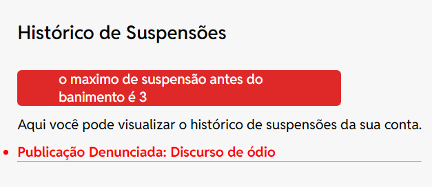
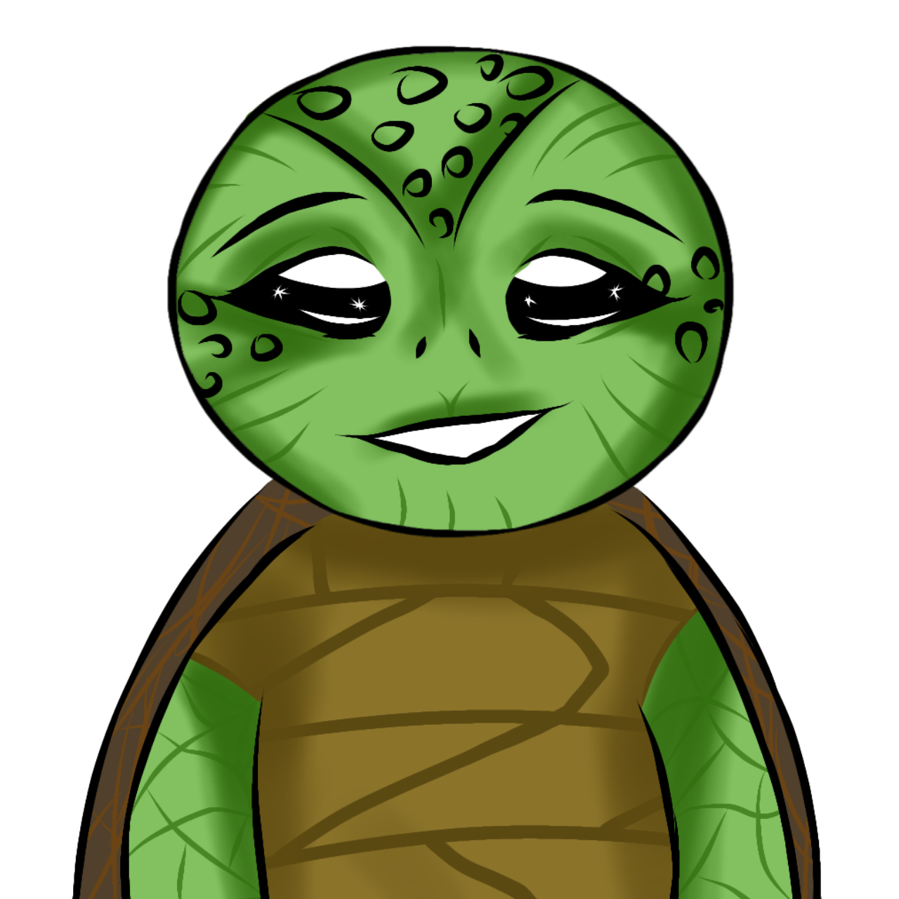
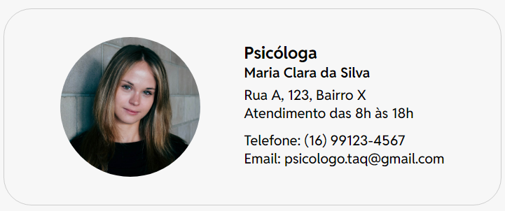

Guiando conversas com empatia: Nosso algoritmo modera todos os comentários para eliminar qualquer intenção maliciosa.
Encontre seu espaço seguro
Comunidades acolhedoras para cada transtorno mental, com fóruns moderados por inteligência artificial e personagens únicos representando diferentes transtornos, além de uma página de contatos de profissionais.
Comunidades
para cada transtorno mental
Descubra sua comunidade: Conectando mentes, compartilhando histórias e fortalecendo jornadas. Cadastre-se agora e descubra muitas outras comunidades. Venha conhecer!
Fóruns moderados
dentro de cada uma das comunidades
Personagens
que representam cada transtorno mental

Melancolia
Melancolia é uma tartaruga que representa a depressão. Ela é gentil e tranquila, mas frequentemente se sente triste e sem energia. A depressão faz com que Melancolia se retraia em seu casco... ver mais
Encontre o que te representa: Escolha o personagem que mais se identifica com você, ele se tornará sua foto de perfil e te representará. Cadastre-se agora e explore uma variedade de personagens! Clique para começar.
Profissionais
endereço e contato fácil para você
Conectando você com o apoio certo: Encontre profissionais especializados em saúde mental, com seus endereços e contatos disponíveis para ajudá-lo em sua jornada de cuidado e bem-estar.
